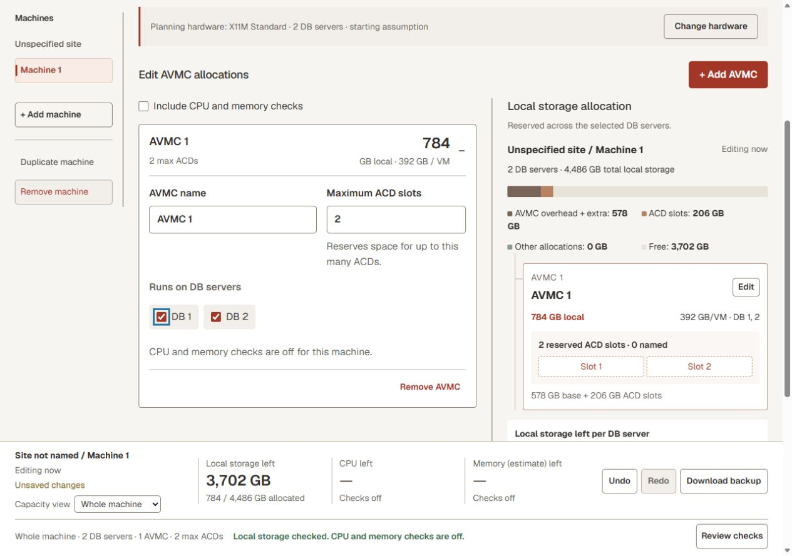

Plan capacity for Oracle Autonomous Database
Check whether your database layout fits on Exadata Cloud@Customer. See what remains on each server and what to confirm before deployment.
Where are you starting?
Explore a worked example Reopen a saved plan
No sign-in required. Saved plans stay in this browser. Download a JSON backup to move one to another device.

Practice with a separate plan, from choosing hardware to saving the result.
From one machine to a multi-site plan
Keep DC, DR and non-production machines separate. Map AVMCs, ACDs and ADBs, compare growth options, and record what still needs checking.
The main scope is Autonomous Database on Exadata Cloud@Customer. Other VM-cluster allocations can be entered as known footprints.
What a result means
A layout can fit the entered capacity and still need operational validation. Storage cells, backups, network, licensing, performance and failure scenarios need separate checks.
Read the scope and limits →Planning questions
The guide walks through local capacity, workload sizing, database groups, imports and saving your work.
Open the guide & FAQ